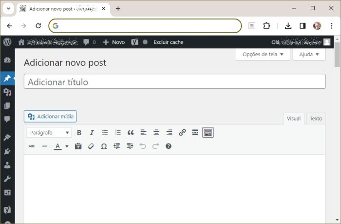

O que é um sistema de gerenciamento de conteúdo (CMS)?
Um CMS (Content Management System) é uma plataforma que permite a você publicar conteúdo na internet sem precisar de conhecimentos de HTML, CSS e outros padrões web. Sistemas assim trazem editor de textos, suportam inserção de fotos e vídeos, salvam rascunhos e possibilitam a atualização do conteúdo após ele ser publicado.
O WordPress é o CMS mais popular da web, não só por oferecer esses recursos, mas também por suportar milhares de plugins que levam a ele funcionalidades extras. Além disso, é possível personalizar o visual das suas páginas no WordPress com temas prontos ou feitos sob medida para o seu projeto.
Embora o WordPress tenha se popularizado como um CMS para blogs, ele não serve só para isso. Seja com recursos nativos ou com plugins, é possível utilizar o WordPress para projetos como:
- Sites institucionais
- Sites de notícias
- Portfólios online
- Galerias de fotos
- Comunidades online
- Cursos online
- Páginas de newsletters
- Páginas de eventos
- Lojas virtuais
A melhor parte é que, por ser uma iniciativa com código-fonte aberto, o WordPress pode ser ajustado para as necessidades de cada projeto. Além disso, essa característica faz o WordPress ser atualizado regularmente para otimização de recursos e correção de falhas, o que o torna bastante versátil e seguro.
